Zéro pub, zéro compte, zéro cloud : l'Atelier tourne uniquement sur vos appareils, PC ou téléphone.
L'Atelier est un deck builder en français, gratuit et local, qui s'ouvre dans votre navigateur : il est pensé pour concevoir, tester et faire évoluer vos decks Magic: The Gathering en Commander.
Les bases : un constructeur de deck Magic complet
Vos decks, sans compte ni prise de tête
Création, import, affichage en liste ou visuel, taille des cartes réglable, tri par type, tag ou fonction : organisez vos cartes exactement comme vous l'entendez. Utilisez l'outil sur ordinateur, sur mobile, ou synchronisez les deux selon vos besoins.
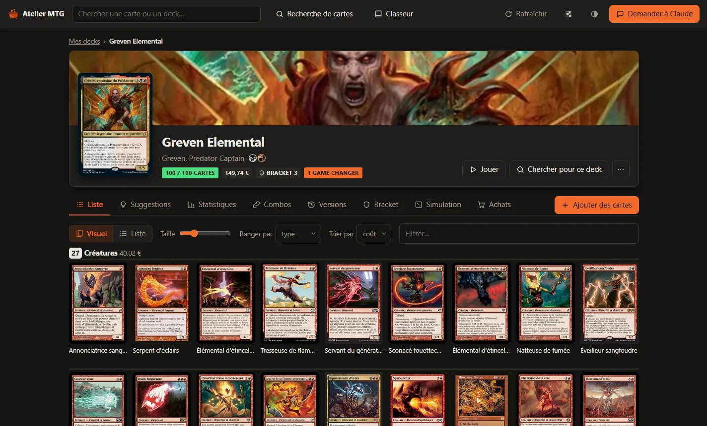
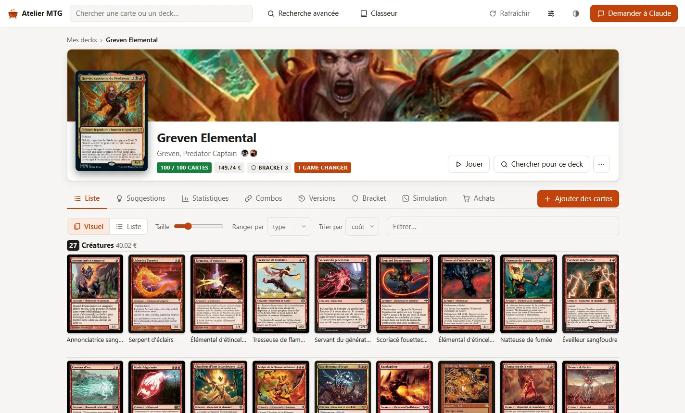
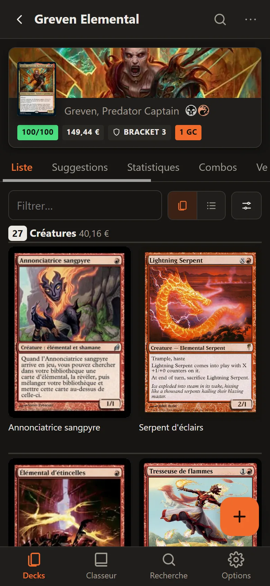
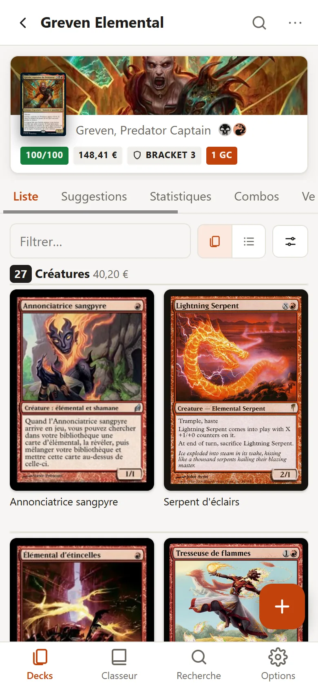
Recherche avancée
Une recherche multicritère comme celle de Magic-Ville, avec en plus un filtre de prix Cardmarket et une catégorisation automatique des cartes : ramp, pioche, tuteur, removal…
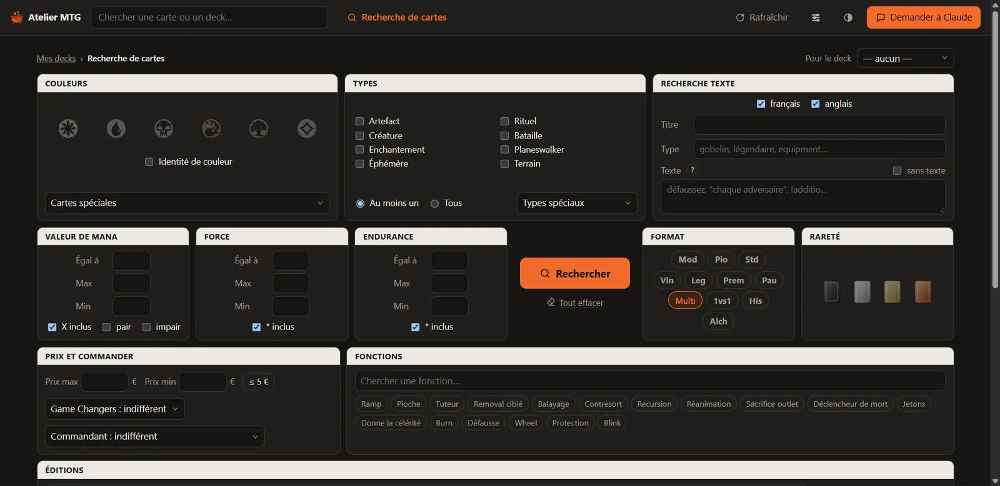
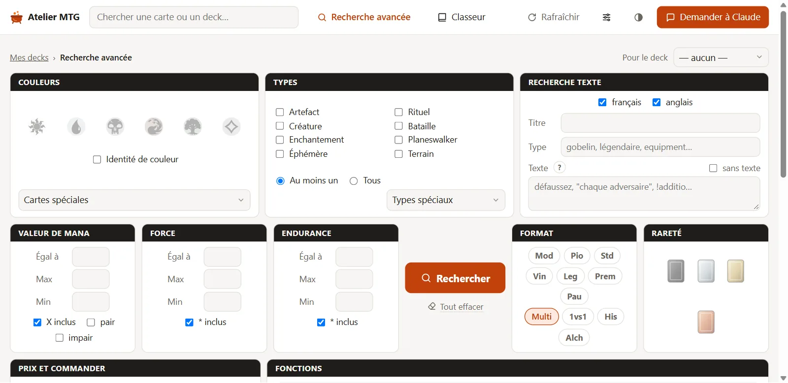
Table de jeu
Jouez vos decks en solo pour tester les mains de départ et les premiers tours : pioche, mulligan, jetons, marqueurs, planeswalkers, tout au clic ou au glisser.
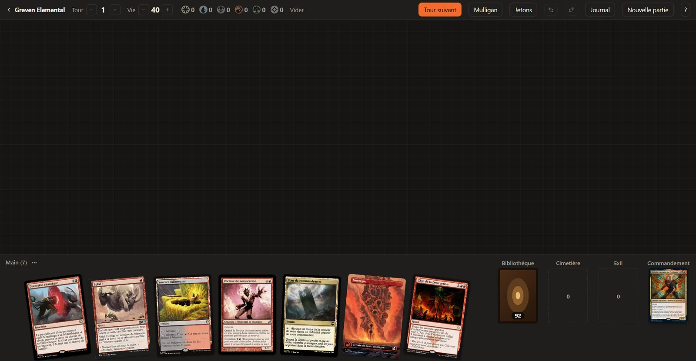
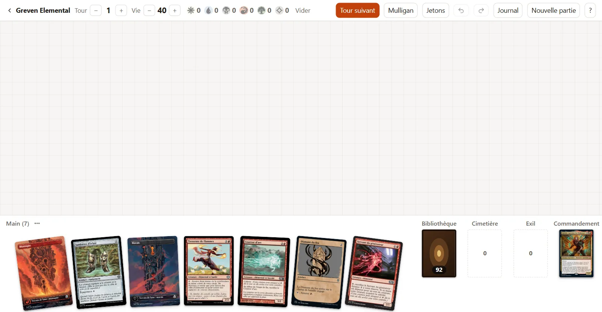
Versions et historique
Chaque modification est gardée. Enregistrez des versions, comparez deux listes, revenez en arrière.
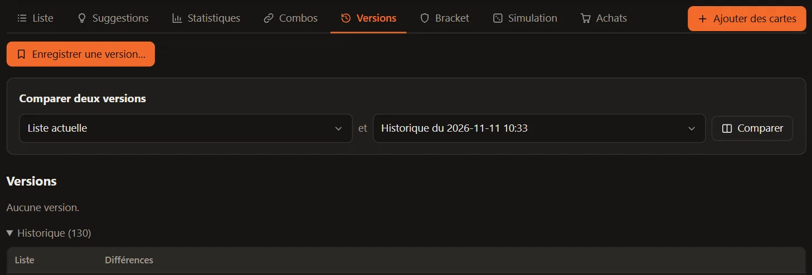
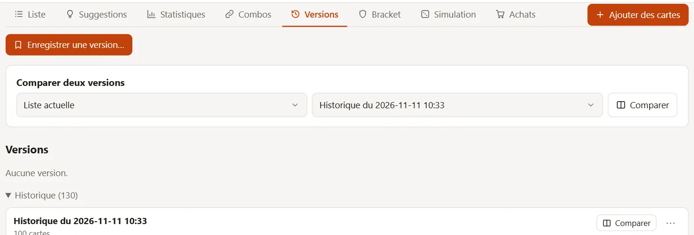
Ce qui fait la différence
Simulateur de parties
En un clic, simulez 1 000 parties à quatre joueurs pour tester la régularité de votre deck (mana, présence sur table, gestion, sortie du commandant). Comparez deux versions d'une même liste pour mesurer vos changements. Avec Claude, le simulateur apprend les cartes complexes, rejoue et vous détaille ses résultats.
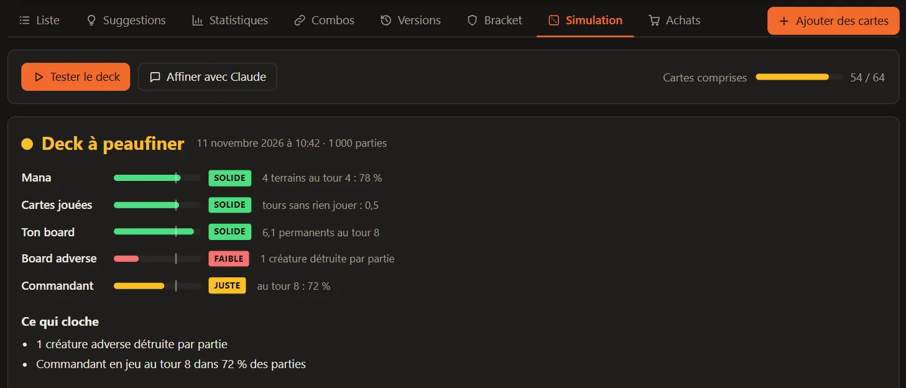
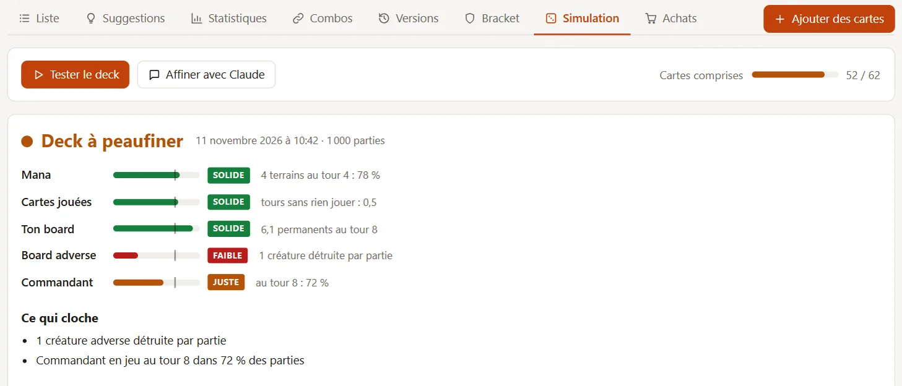
Bracket
Le bracket est estimé automatiquement selon les règles officielles : Game Changers, combos infinies à deux cartes, tuteurs… et comparé à l'estimation de Commander Spellbook.
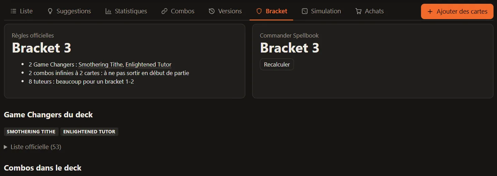
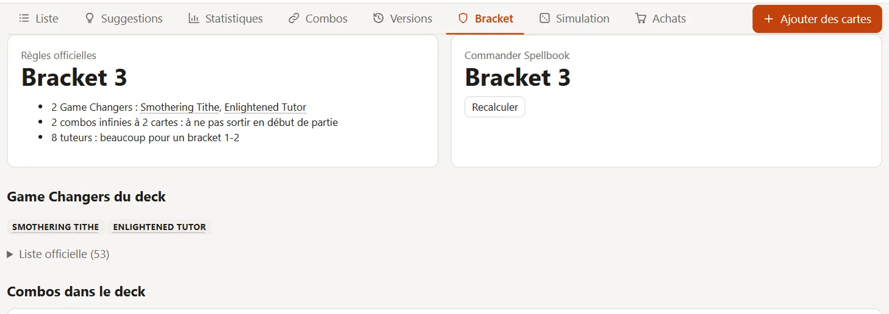
Statistiques et base de mana
Courbe de mana, types, fonctions des cartes et surtout la répartition des sources de couleur : elle compte les terrains et les cartes de ramp, et dit si chaque couleur est confortable.
Suggestions de cartes
Des recommandations ciblées selon votre commandant, vos combos et votre classeur. Triées par pertinence, adaptées à vos couleurs et à votre budget, avec filtres par type, coût et prix.
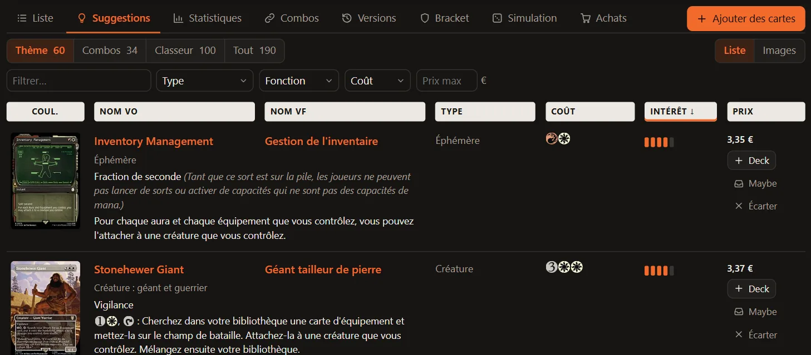
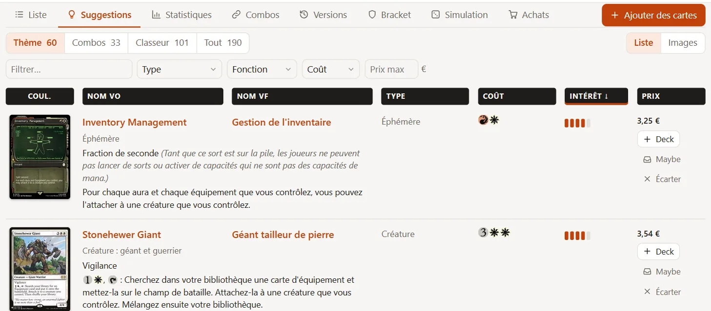
Prix Cardmarket et budget
Les prix Cardmarket pour vos cartes et vos decks, avec alerte en cas de dépassement de budget. Exportez les cartes manquantes au format liste de souhaits Cardmarket en un clic pour calculer directement votre panier.
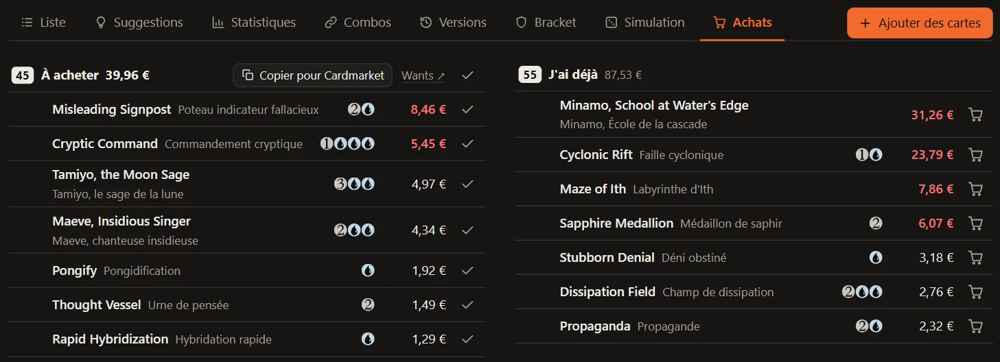
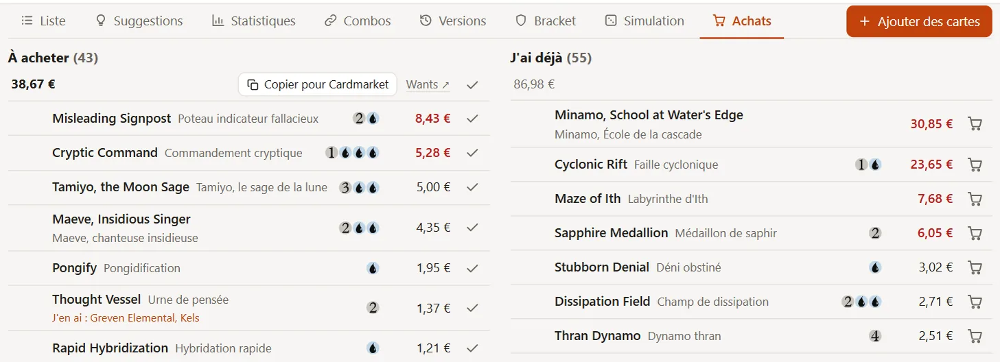
Combos
Les combos du deck sont repérées automatiquement, en croisant plusieurs sources : MTGPics (la base de Magic-Ville) et Commander Spellbook.
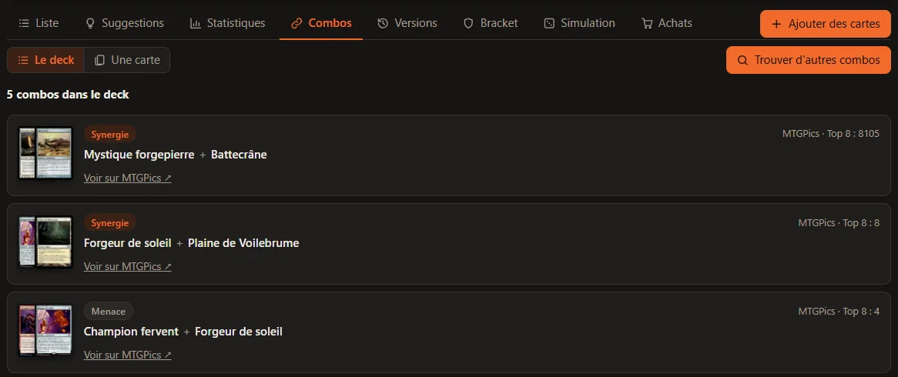
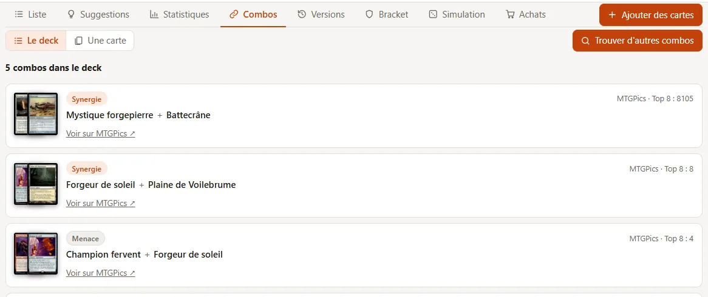
Discussion avec Claude (optionnel)
Un copilote optionnel qui a accès à tout votre Atelier (decks, stats, combos, classeur). Il vous aide à faire vos cuts, explorer des synergies ou vérifier des règles complexes. Aucune clé d'API à configurer : il utilise directement votre abonnement Claude payant (Pro ou supérieur).
Et aussi
Import en un collage
Une liste copiée depuis Moxfield, Archidekt ou MTG Arena devient un deck, rangé par catégories.
Partage simplifié
Chaque deck a sa page en ligne, tenue à jour toute seule, à envoyer à votre groupe de jeu : liste, visuel, statistiques, et une table pour le tester. Voir des exemples
Philosophie : local, ouvert et transparent
- Open source et gratuit. Le code est publié sous licence MIT : accessible, vérifiable et modifiable par tous sur GitHub.
- Vos decks sont stockés sur vos appareils. Rien n'est collecté. Seules sortent les requêtes nécessaires : données, images et prix des cartes (Scryfall), combos et bracket (Commander Spellbook, MTGPics), la discussion avec Claude si vous l'utilisez, la sauvegarde en ligne si vous l'activez, et les pages que vous choisissez de partager.
- L'IA est optionnelle. Tri, statistiques, suggestions, test du simulateur et jeu en solo fonctionnent sans aucune configuration IA.
Installation
Ce logiciel de construction de deck Magic s'utilise sur votre ordinateur Windows ou sur votre téléphone. Gratuit, sans compte.
Sur ordinateur
Windows 10 et 11 · rien d'autre à installer
Télécharger pour Windows- Double-cliquez sur le fichier, puis sur Installer. Si Windows affiche Windows a protégé votre ordinateur : Informations complémentaires, puis Exécuter quand même.
- L'Atelier s'ouvre dans votre navigateur. Pour le rouvrir : raccourci Atelier MTG sur le bureau.
Sur téléphone
Android et iPhone · sans store, sans compte
Scannez ce code avec votre téléphone, ou ouvrez app.atelier-mtg.com.
- Ajoutez l'appli à l'écran d'accueil. Android : Installer l'application ; iPhone : Partager, puis Sur l'écran d'accueil.
- Touchez Commencer. L'Atelier est déjà sur votre PC ? Relier à mon PC.
Autres façons d'installer
Sur Mac, sur Linux, ou pour tout contrôler vous-même.
Avec un assistant IA Windows, macOS, Linux · il s'occupe de tout
- Ouvrez un assistant IA qui agit sur votre ordinateur : Claude Code, Cursor, Copilot… Sinon, l'application Claude pour ordinateur (abonnement Pro ou plus), onglet Code.
- Collez-lui cette consigne :
Installe et lance l'Atelier MTG depuis github.com/PierreRibeaucourt/atelier-mtg - Répondez à ses trois questions : il installe tout et crée le raccourci sur le bureau.
À la main Windows, macOS, Linux · Python et git
Les nouvelles versions s'annoncent dans l'Atelier et s'installent en un clic ; vos decks sont conservés. Code source : github.com/PierreRibeaucourt/atelier-mtg
Questions fréquentes
Installation et sécurité
Je ne suis pas informaticien : c'est compliqué à installer ?
Non. Sous Windows, téléchargez l'installeur et lancez-le, comme n'importe quel programme : il contient tout ce qu'il faut et crée un raccourci sur le bureau. Ensuite, les mises à jour s'installent en un clic. Sous macOS et Linux, confiez l'installation à un assistant IA qui agit sur votre ordinateur, comme Claude Code : collez-lui la consigne ci-dessus.
Ça marche sur Mac et Linux ?
En principe oui : c'est le même programme, lancé par atelier.sh. Mais pour l'instant, seul Windows est testé.
Est-ce sûr ?
L'Atelier ne s'ouvre que sur votre PC : il n'est pas accessible depuis le réseau. Son installeur n'est pas signé (une signature coûte plusieurs centaines d'euros par an), d'où l'avertissement de Windows au premier lancement ; mais tout son code est public : vous, ou votre assistant IA, pouvez le lire avant de l'installer.
Claude
Faut-il payer pour Claude ?
Claude est facultatif : sans lui, tout le reste fonctionne. Pour s'en servir, il faut un abonnement Claude payant (Pro ou plus), car le compte gratuit ne donne pas accès à Claude Code.
Va-t-il épuiser mon abonnement ?
Il ne travaille que quand vous lui écrivez, ou quand vous cliquez sur un bouton qui l'appelle, comme l'analyse des synergies d'un deck ou « Affiner avec Claude » : rien ne tourne en arrière-plan. Les suggestions, les combos, le bracket, les statistiques, les fonctions des cartes et le test du simulateur ne passent pas par lui. « Compacter » résume une longue discussion pour qu'elle consomme moins.
Vos cartes et vos données
Comment entrent mes cartes ?
On colle une liste copiée depuis Moxfield, Archidekt ou MTG Arena. La liste d'un deck préconstruit se trouve sur ces sites. Les cartes rangées hors des decks se collent de la même façon dans le classeur.
Peut-on créer un deck Magic en ligne, depuis son téléphone ?
Oui : ouvrez app.atelier-mtg.com sur votre téléphone, puis ajoutez-la à l'écran d'accueil. Elle marche seule, sans PC ni compte, ou reliée à l'Atelier de votre PC par un QR code, et garde vos decks même sans réseau. La simulation, la table de jeu, les proxies et la discussion avec Claude restent sur PC.
Pour montrer un deck à quelqu'un, « Partager » le publie sur une page comme celles-ci, qui se lit sur téléphone et se met à jour toute seule. Il faut un compte GitHub, gratuit : c'est lui qui héberge votre page.
Et si mon PC tombe en panne ?
Activez la sauvegarde en ligne, facultative : l'Atelier range une copie de vos decks, de leurs versions et de votre classeur sur votre propre compte GitHub, gratuit, dans un espace privé que vous seul voyez. Chaque modification s'y ajoute toute seule. Sur un autre PC, « Récupérer mes decks » les ramène.
Puis-je partir avec mes decks ?
Oui. Chaque deck est un dossier sur votre disque, avec sa liste en texte (format Archidekt, tags compris), son historique et ses versions. Le menu « … » copie la liste pour Archidekt, Moxfield, MTG Arena ou MTGO.
Magic
Peut-on jouer en ligne contre d'autres joueurs ?
Non, ce n'est pas un jeu vidéo. La table de jeu se joue seul, à la main, pour tester les mains de départ et les premiers tours.
Comment simuler des parties à quatre ?
En simplifiant. Les trois adversaires sont des archétypes (aggro, contrôle, jetons, combo…). Selon des probabilités, ils posent des créatures, retirent vos menaces, rasent la table ou gagnent sur une combo, mais sans politique. Seul, le simulateur juge la régularité du deck : le mana, les cartes jouées, le board, le commandant. Il comprend une partie des cartes en lisant leur texte, et joue les autres sans leur effet, ou avec une partie seulement : c'est Claude qui lui apprend celles-là. Les taux de victoire ne s'affichent qu'ensuite, quand ils ont un sens.
Je débute, est-ce pour moi ?
Oui. Les statistiques comparent votre deck à un modèle type, et Claude peut expliquer une règle, une carte ou proposer des ajouts dans votre budget. Les mots de cette page :
- Ramp : les cartes qui donnent du mana en plus, pour jouer plus gros plus tôt.
- Removal : les cartes qui détruisent ou exilent une menace adverse.
- Tuteur : une carte qui va chercher une carte précise dans votre bibliothèque.
- Combo : des cartes qui, ensemble, gagnent la partie ou créent un effet infini.
- Cut : les cartes à retirer pour revenir à 100.
- Bracket : le niveau de puissance officiel d'un deck Commander, de 1 à 5, pour jouer à armes égales.
- Game Changers : une liste officielle de cartes très puissantes, qui font monter le bracket.
La recherche comprend-elle la syntaxe Scryfall ?
Non. Elle reprend le formulaire de Magic-Ville, où les mêmes critères se cochent : identité de couleur, texte, coût… Elle ajoute le prix et la fonction des cartes.
Les règles et les combos sont-ils à jour ?
La liste des Game Changers est relue chaque jour, et les nouvelles cartes arrivent toutes seules à chaque extension. Les combos viennent de Commander Spellbook et de MTGPics, entretenues par leurs communautés. Si les règles des brackets changent, une mise à jour de l'Atelier les suit.
Les prix tiennent-ils compte de l'état, de la langue, du port ?
Non : c'est le prix indicatif de Cardmarket, pour l'édition la moins chère. On n'achète pas dans l'Atelier. En revanche, l'onglet Achats copie les cartes qui vous manquent au format des listes de souhaits de Cardmarket, et c'est Cardmarket qui calcule ensuite le panier.
Genèse du projet
Par PierreRibeaucourt, créateur de l'Atelier
À l'origine, mes listes tenaient sur de simples fichiers texte que j'analysais en ligne de commande avec un LLM et quelques ressources théoriques (ratios de mana, moteurs de pioche, conditions de victoire).
Manipuler du code brut a vite montré ses limites. Pour ajuster un cut ou évaluer instantanément l'impact d'une modification, il me fallait une vraie interface graphique qui réunisse les points forts des outils de référence :
- Archidekt pour la table d'essai et les tests en solitaire ;
- Magic-Ville et Commander Spellbook pour la recherche multicritère et les combos ;
- Cardmarket pour les cotations du jour ;
- les règles officielles pour le contrôle direct des cartes interdites, des brackets et des Game Changers.
J'ai donc créé l'Atelier pour réunir tout ça : une vraie interface sur PC pour construire vos decks, avec la possibilité d'appeler l'IA en renfort si besoin.